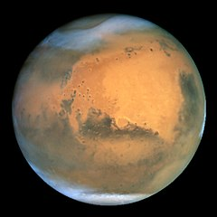

Наша галактика та сонячна система
Галактика Чумацький Шлях
Чумацький шлях - назва галактики, у якій розташована наша Сонячна система, а також усі зорі, які ми бачимо неозброєним оком. Чумацький Шлях є спіральною галактикою типу SBbc за класифікацією Габбла, що разом із галактикою Андромеди, Галактикою Трикутника та низкою інших галактик утворюють місцеву галактичну групу. У свою чергу, місцева група входить до Надскупчення Діви.
Розміри
Дуже важко визначити вік, коли сформувався Чумацький Шлях, але наразі вік найдавніших зір у галактиці оцінюється у 13,6 мільярдів років[10], що приблизно дорівнює віку Всесвіту. За сучасними уявленнями[11], Чумацький Шлях утворився внаслідок зіткнення і злиття невеликих галактик. Свідченнями цього є перші зорі з дуже низькою металічністю, що утворилися на найранішому етапі існування Всесвіту (наприклад, такі як HD 140283). Такі зорі вчені знаходять у галактичному гало — «околиці» Чумацького шляху, що тягнеться за межі його видимої частини. У лютому 2010 року астрономи Європейської південної обсерваторії (Чилі) виявили такі ж зорі в карликових галактиках у сузір'ях Печі, Скульптора, Секстанта і Кіля
Структура
Маса Чумацького Шляху становить близько 5,8*10(11) M в ньому налічується від 200 до 400 мільярдів зір (якщо вважати, що зорі малої маси домінують)[14]. Тільки 0,0001% всіх зір Галактики перелічено і занесено до каталогів. Чумацький Шлях може містити десять мільярдів білих карликів, мільярд нейтронних зірок, і сто мільйонів чорних
Сонячна система
Сонячна система — планетна система, що включає в себе центральну зорю — Сонце, і всі природні космічні об'єкти (планети, астероїди, комети, потоки сонячного вітру тощо), які об'єднуються гравітаційною взаємодією. Сонячна система є частиною значно більшого комплексу, який складається із зірок і міжзоряної речовини — галактики Чумацький Шлях.
Наша сонячна система складється планет земної групи та планет-гігантів. До планет земної групи відносяться: Меркурій, Венера, Земля, Марс; до планет-гігантів: Юпітер, Сатурн, Уран, Нептун.
Меркурій

Меркурій — найближча до Сонця планета Сонячної системи. Обертається навколо Сонця за 87,969 земних діб. Меркурій належить до внутрішніх планет, оскільки його орбіта лежить ближче до Сонця, ніж пояс астероїдів. Після позбавлення Плутона статусу планети Меркурій є найменшою планетою Сонячної системи.
Венера

Венера — друга від Сонця та шоста за розміром планета Сонячної системи. Період обертання навколо Сонця — 224,7 земних діб. Названа на честь Венери, богині кохання з римського пантеону. Це єдина з восьми планет Сонячної системи, яка отримала назву на честь жіночого божества. За розміром майже така ж, як і Земля.
Венера — внутрішня планета, і на земному небосхилі не віддаляється від Сонця далі 48°. Венера — третій за яскравістю об'єкт на небі; її блиск поступається лише блиску Сонця та Місяця. Належить до планет, відомих людству з найдавніших часів.
Земля
Земля — третя від Сонця планета Сонячної системи, єдина планета, на якій відоме життя, домівка людства. Земля належить до планет земної групи і є найбільшою з цих планет у Сонячній системі.
Земля є об'єктом дослідження значної кількості наук про Землю.
Марс
Марс — четверта планета Сонячної системи за відстанню від Сонця та сьома за розміром і масою. Названа на честь Марса — давньоримського бога війни. Іноді Марс називають «червоною планетою» через червонуватий колір поверхні.
Юпітер
Юпітер — п'ята від Сонця та найбільша планета Сонячної системи. Відстань Юпітера від Сонця змінюється в межах від 4,95 до 5,45 а.о. (740—814 млн км), середня відстань 5,203 а.о. (778 млн км). Разом із Сатурном, Ураном і Нептуном Юпітер класифікують як газового гіганта.
Юпітер більш ніж удвічі масивніший за всі інші планети разом узяті; він майже в 318 разів масивніший за Землю. Однак маса Юпітера недостатня, аби перетворитися на зорю, подібну до Сонця: для цього його маса мала б бути ще в 70—80 разів більшою. Тим не менш у надрах Юпітера відбуваються процеси з досить потужною енергетикою: теплове випромінювання планети, еквівалентне 4·1017 Вт, що приблизно вдвічі перевищує енергію, яку ця планета отримує від Сонця. Вірогідним джерелом такої енергії є гравітаційне стиснення.
Сатурн
Сатурн — шоста за віддаленістю від Сонця та друга за розмірами планета Сонячної системи. Сатурн швидко обертається навколо своєї осі (з періодом — 10,23 години), складається переважно з рідкого водню і гелію, має товстий шар атмосфери. Навколо Сонця Сатурн обертається за 29,46 земних років на середній відстані 1427 млн км. Екваторіальний діаметр верхньої межі хмар — 120 536 км, а полярний — на кілька сотень кілометрів менший. В атмосфері Сатурна міститься 94 % водню і 6 % гелію (за об'ємом). Його маса у 95 разів більша за масу Землі, магнітне поле трохи слабше за земне. Вважається, що Сатурн має невелике ядро з силікатів і заліза, покрите льодом і глибоким шаром рідкого водню. На 2013 рік було відомо про існування 62 природних супутників Сатурна, найбільший з яких — Титан.
Уран
Уран — сьома від Сонця велика планета Сонячної системи, що належить до планет-гігантів. Діаметр Урана в 4 рази, а його маса — в 14,5 раза більші за земні, що робить його третьою за діаметром і четвертою за масою планетою Сонячної системи.
На відміну від інших газових гігантів Сатурна та Юпітера, що складаються переважно з водню і гелію, у надрах Урана та схожого з ним Нептуна відсутній металічний водень. Проте в них є багато високотемпературних модифікацій льоду — з цієї причини фахівці виділили ці дві планети в окрему категорію «крижаних гігантів». Зокрема, надра Урана складаються здебільшого з льодів і гірських порід.
Нептун

Нептун — планета Сонячної системи, восьма за віддаленістю від Сонця. Вона четверта за розміром у Сонячній системі, третя за масою і належить до планет-гігантів. Її орбіта перетинається з орбітою Плутона в деяких місцях. Також орбіту Нептуна перетинає комета Галлея. Маса Нептуна у 17,2 рази, а діаметр екватора у 3,9 рази більший за земний. Планета названа на честь римського бога морів.
Повз Нептун пролітав тільки один космічний апарат — «Вояджер-2», 25 серпня 1989 року.
Кільця Нептуна
Нептун також має кільця — два широких і два вузьких. Їх було відкрито під час затемнення Нептуном однієї з зірок 1981 року. Спостереження з Землі дозволили побачити тільки слабкі дуги замість повних кілець, але фотографії «Вояджера-2» в серпні 1989 року показали їх повністю. Одне з кілець має складну викривлену структуру. Подібно Урановим і Юпітеровим, кільця Нептуна дуже темні й будова їх невідома. Можливо, кільця складаються з льоду, покритого силікатами чи вуглецевмісною речовиною, що надає їм червонуватий відтінок[60]. Їм дали наступні назви: зовнішнє — Адамс (яке містить три дуги, що виділяються, які охрестили Свободою, Рівністю і Братерством), потім — безіменне кільце, що збігається з орбітою супутника Нептуна Галатеї, слідом — Левер'є (чиї зовнішні розширення названі Ласселл і Араго), і, нарешті, слабке, але широке кільце Галле. Як видно, назви кілець увіковічили тих, хто брав участь у відкритті Нептуна.